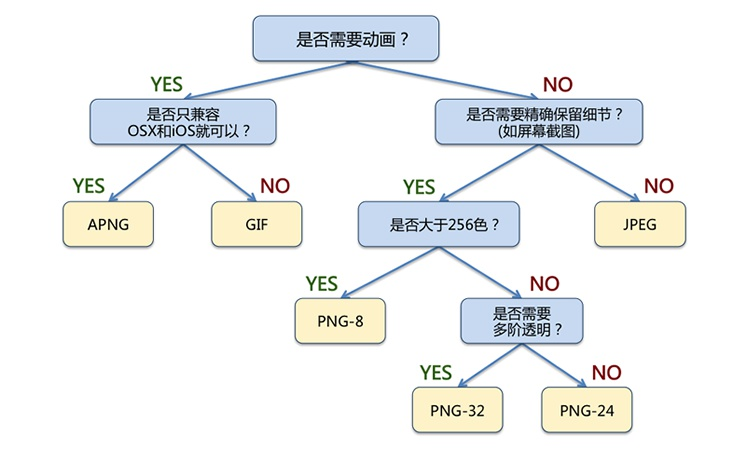
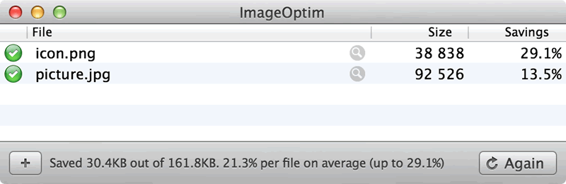
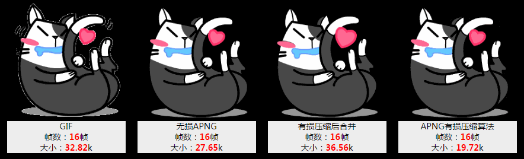

HTTP ArchieveAccording to statistics, image content already accounts for 62% of the total content on the Internet, meaning more than half of traffic and time is spent downloading images. From the perspective of performance optimization, images are definitely one of the hot spots and key points. Google PageSpeed or Yahoo's 14 performance optimization rules all regard image optimization as an important optimization method. This article covers all aspects of web image optimization, from basic image format selection to responsive images that are not yet widely supported.
I really like what Google Web Fundamentals says:
Image optimization is both an art and a science. It is an art because there is no single best specific solution for compressing an individual image. It is a science because many well-developed methods and algorithms can significantly reduce image size. To find the optimal settings for an image, careful analysis is needed across many dimensions: format capabilities, encoded data content, pixel dimensions, and more.
Do you really need to use images?
Do you really need an image to achieve the desired effect? This is the first question to ask yourself. Browsers and web standards have evolved extremely fast. I remember a few years ago when I was writing a video player with Microsoft Silverlight 1.0, Chinese text could not be displayed with custom fonts, so I wrote a lot of terrible code that generated the required text as images on the server and cached them. They were slow for users to download, and search engines could not index that text at all.
But now things are different. Many effects (gradients, shadows, rounded corners, etc.) can be implemented with pure HTML, CSS, SVG, etc. Implementing these effects takes as little as a few lines of code, or at most loading an extra library (an ordinary photo compared toa very powerful effects libraryis also much larger). These effects not only take up very little space, but also work well on multiple devices and resolutions, and can be gracefully degraded on older browsers. Therefore, when alternative technologies exist, these technologies should be chosen first, and real images should only be added when images are unavoidable.
Alternative technologies
- CSS effects and CSS animations. They provide resolution-independent effects, display clearly at any resolution and zoom level, and take up very little space.
- Web fonts. Now even many icon libraries are provided in the form of fonts, preserving the searchability of text while expanding display styles.
Front-end engineers should ideally maintain communication with designers and product managers,helping them understand what effects are "simple, efficient, and maintainable". After all, for CSS, changing the radius of a rounded rectangle can be seen in real time; with images, you at least need to regenerate the image, cut it out, and replace the asset. Retina, high-resolution screens, and multi-size devices have all accelerated the development of non-image effects. Just think of how terrible Windows 7 looks on high-resolution screens, and you will know that native image resources are definitely not the more the better.
Selecting an image format
If an image is really needed to express the effect, then choosing the image format is the first step of optimization. Terms we often hear include vector graphics, raster graphics, SVG, lossy compression, lossless compression, etc. Let's first explain the characteristics of various image formats.
| Image format | Compression method | Transparency | Animation | Browser compatibility | Suitable scenarios |
|---|---|---|---|---|---|
| JPEG | Lossy compression | Not supported | Not supported | All | Complex colors and shapes, especially photos |
| GIF | Lossless compression | Supported | Supported | All | Simple colors, animation |
| PNG | Lossless compression | Supported | Not supported | All | When transparency is needed |
| APNG | Lossless compression | Supported | Supported | Firefox Safari iOS Safari | Animations requiring semi-transparency |
| WebP | Lossy compression | Supported | Supported | Chrome Opera Android Chrome Android Browser | Complex colors and shapes; predictable browser platform |
| SVG | Lossless compression | Supported | Supported | All (IE8 and above) | Simple graphics, good scaling experience, dynamic control of image effects needed |
Among them, APNG and WebP formats appeared relatively late,and have not yet been adopted by web standards.They should only be used when the specific platform or browser environment is predictable. Although both can degrade gracefully in unsupported environments, this section will not discuss these two formats for now. The image format selection process is as follows:

For photos with rich colors, JPG is the universal choice.
- The structure of the human eye is well suited to viewing JPG-compressed photos; it can fully ignore details and fill them in mentally.
- JPG retains details fairly well when the compression ratio is not high.
- WebP can reduce file size by 30% compared to JPG, but currentlyhas poor browser compatibility.
If a more universal animation format is needed, GIF is the only usable choice.
- GIF supports a color range of 256 colors, and only supports fully transparent / fully opaque.
- When displaying animations with rich colors, GIF may have problems such as missing colors and jagged edges.
If the image consists of standard geometric shapes, or if you need to dynamically control its display effects via programs, you can consider the SVG format.
- SVG is vector graphics defined using XML, and the resulting images can be freely scaled at any resolution.
- In SVG, you can freely change image effects through interfaces such as JavaScript, and can achieve free rotation, movement, color changes, etc. of some elements.
If you need to clearly display images with rich colors, PNG is better.
- PNG-8 can display 256 colors, but it also supports 256 levels of transparency. Therefore, for scenarios with fewer colors but requiring semi-transparency (such as WeChat animated emoticons), PNG-8 can be considered.
- PNG-24 can display true color but does not support transparency. It is recommended for images with rich colors (e.g., screenshots, UI design mockups).
- PNG-32 can display true color and supports 256 levels of transparency. It has the best effect but also the largest file size.
Selecting image dimensions
Dimensions used to be the least discussed topic, but the world has become much more complicated since Retina appeared. The topic of pixels and dimensions on mobile devices is enough for a full paper. I suggest students who want details refer to the following article:
A Brief Talk on Mobile Web Development (Part 1): In-depth Concepts
Here we only talk about the parts and conclusions we care about. We need to distinguish between different types of pixels: CSS pixels and device pixels. One CSS pixel may contain multiple device pixels. For images, on high-DPI screens, you need higher-resolution images. If we are talking about Retina, then you need images at 2x resolution (almost 4x the size). There is almost no room for shortcuts: the screen is just that big, and the required image is needless to say that big. (Why is the pigeon so big? ^_^)

What we can control is displaying an image at "exactly" the required size. For example, on screen, through CSS orthe width/height attributes of the <img> tag, resizing a 200x200 image to 100x100, then (200x200)-(100x100)=30000 pixels are wasted, which accounts for 75% of the image size!
The reason for such a huge waste is that image file size is basically proportional to the area, and thus proportional to the square of width and height. Therefore, calculating the actual displayed image size on the client side can greatly reduce the image size. Even if only 10px of width and height are wasted, when the image is large enough, this part will still have a significant impact.
Responsive images
Earlier we mentioned displaying images at "exactly" the size the client needs. It sounds easy, doesn't it? But after responsive layouts appeared, this became extremely difficult. We need to support countless devices from 1920px wide down to 320px wide. If we use 1920px-wide images, then on small devices (which are often more sensitive to network speed and data usage), every user pays extra bandwidth and waiting time. If we use 320px-wide images, then on a 1920px screen it is as unacceptable as running DOS on an HD screen.
Naturally, we need images to also load "responsively", loading different sizes of images according to the device. Responsive images have not yet been written into web standards, and implementing them has many inconveniences and compatibility limitations. I recommend referring to this article from the Baidu EFE team:
Although responsive imageshave not yet become a standard,they are a powerful tool for web image optimization. Once widely supported, there is no more effective optimization method than reducing the image size.Optimizing JPG and PNG
After selecting the correct image format and generating the image at the correct size, we still need to further optimize the image. This optimization generally proceeds in two steps:
- Lossy optimization: remove colors that never appear or appear very rarely, and merge adjacent similar colors. This step is not strictly necessary; for example, PNG format can go directly to the next step.
- Lossless optimization: compress data and remove unnecessary information.
After generating images in JPG and PNG formats, there is usually still room for further optimization. For example, JPG photos may carry camera Exif information, and PNG images may contain layer information from software such as Fireworks. After removing this extra information, you can also optimize by reducing the image palette, removing colors that never appear, and merging adjacent identical colors. I will not go into the theoretical details here; I will only introduce practical optimization tools that can be used in engineering.
There are a series of tools for different image formats, and these tools have many more parameter adjustment options. Several common adjustment tools are:
| Tool | Purpose |
|---|---|
| jpegtran | Optimize JPG images |
| OptiPNG | Lossless PNG optimization |
| AdvPNG | Lossless PNG optimization |
| PNGQuant | Lossy PNG optimization |
If you really need to pursue extreme compression of various images, you can refer to the documentation of these tools. However, for typical web applications, the types of images encountered are diverse, and it is almost impossible to independently configure each tool in engineering. Therefore, it is recommended to use the following tools for optimization. These tools often use one or more of the optimization tools in the table above.
ImageOptim (Mac)
Homepage:https://imageoptim.com/
A very nice image optimization tool on the Mac platform. You just need to drag the images to be optimized into ImageOptim, and the optimization is done. The settings are also rich, and it currently supports JPG and PNG optimization. This is the tool I use most often when writing articles: drag the images used on the website in, and optimization is complete~

Kraken (Web)
Homepage:https://kraken.io/
In the free mode, you can upload images, and after optimization they are packaged for download. Many foreign companies also choose its paid service. I have personally tested Kraken's image optimization results; they are generally about 3% smaller than ImageOptim. The effect is good, and of course the price is also good. It is suitable for occasional image optimization needs, or situations where there is no optimization software available on the development machine.

Zhitu (Web)
Homepage:http://zhitu.tencent.com/
Tencent ISUX team has an article introducing Zhitu:http://isux.tencent.com/zhitu.html
It is time for domestic products to stand out. Tencent's Zhitu tool has not been out long, but actual testing shows it works well, and it providesGulp automation supportThis part will be introduced later in the automatic optimization section. I just want to suggest one thing: Kraken's homepage is hundreds of times more beautiful than Zhitu's... And is it really okay to put the compressed PNG and compressed JPG side by side for size comparison?

Optimizing SVG
All newer browsers support Scalable Vector Graphics (SVG). SVG is an XML-based image format suitable for two-dimensional images. SVG markup can be embedded directly in web pages or included as an external resource. SVG files can be created with most vector-based drawing software. Here is a simple SVG graphic:
{kind=link}
This circle has a black outline and a red background, exported directly from Adobe Illustrator. You can see a lot of metadata in it, such as layer information, comments, XML namespaces, and so on. This data is usually not needed when rendering resources in the browser. Therefore, we need to use some tools to remove these unnecessary metadata and keep only the required markup.
SVGOTools can reduce the size of SVG files. In this example, SVGO can reduce the size of an Illustrator-generated SVG file by 58%, from 470 bytes to 199 bytes. Because SVG is an XML-based format and essentially plain text, GZIP compression can also be used to reduce transfer size. Of course, this requires some server configuration, such as setting the following in an Apache server:
AddType image/svg+xml .svg AddOutputFilterByType DEFLATE image/svg+xml
to enable GZip compression for SVG files (of course, you also need to load the deflate module and configure it properly; GZip configuration is beyond the scope of this article, so please Google this part yourself)
Optimizing GIF and APNG
GIF has many advantages: when the number of colors is low, it can greatly reduce image size, and it is also the only image format that can display animations in a relatively universal way. I am not very familiar with the optimization principles of the GIF format; I directly use mature compression tools in engineering. In the laterautomatic optimizationsection on Grunt, I will introduce a method for automatic optimization through Grunt tasks.
As for APNG, current browser support for it is not yet good enough. However, in scenarios supporting HTML5, there is a mature open-source toolapng-canvasthat can be used to support APNG.

Tencent ISUX team has an article introducingiSpartatools:http://isux.tencent.com/introduction-of-apng.htmlThis is currently almost the only tool that can batch process APNG files. Those who are interested can learn more from that article.
Automatic optimization
I have said too much above about methods and tools for optimizing images of various formats. Optimizing images requires a lot of repetitive work. As engineers, we obviously cannot tolerate this, so many tools have been created to automatically optimize images. Here I mainly introduce three methods: CDN, Grunt/Gulp, and Google PageSpeed.
Automatic optimization: CDN
Using a CDN to automatically optimize images. I have rarely seen this kind of service among foreign CDN providers, but the two rising domestic CDN leadersQiniu和Upyunhave done a lot of work in this regard. The way it works is: when requesting an image from the CDN, the URL parameters include image processing parameters (format, width and height, etc.). The CDN server generates the required image according to the request and sends it to the user's browser.
Qiniu Cloud Storage'simage processing interfaceis extremely rich, covering most basic image operations, such as:
- Image cropping, supporting multiple cropping methods (such as by long edge, short edge, fill, stretch, etc.)
- Image format conversion, supporting JPG, GIF, PNG, WebP, etc., with different image compression ratios
- Image processing, supporting image watermarking, Gaussian blur, focus processing, etc.
The image processing interface of Qiniu Cloud Storage is not complicated to use. For example, take the following original image:

We request the following URL to crop the center part and proportionally scale it to generate a 200x200 thumbnail:
http://qiniuphotos.qiniudn.com/gogopher.jpg?imageView2/1/w/200/h/200

Automatic optimization: Grunt/Gulp
Here I introduce Grunt components used for image optimization:grunt-imageFront-end engineers' repetitive work, such as merging static resources, compressing JS and CSS files, compiling SASS, etc., can be completed in batches using automation tools like Grunt. Image optimization is no exception.
grunt-image is very powerful. According to the author's introduction, the image optimization tools loaded internally include pngquant, optipng, advpng, zopflipng, pngcrush, pngout, mozjpeg, jpegRecompress, jpegoptim, gifsicle, and svgo. It supports batch automatic optimization of PNG, JPG, SVG, and GIF, and its speed is also good. The configuration supports single-image optimization and whole-directory optimization:
module.exports = function (grunt) {
grunt.initConfig({
image: {
// 指定单独的图片优化
static: {
options: {
pngquant: true,
optipng: true,
advpng: true,
zopflipng: true,
pngcrush: true,
pngout: true,
mozjpeg: true,
jpegRecompress: true,
jpegoptim: true,
gifsicle: true,
svgo: true
},
files: {
'dist/img.png': 'src/img.png',
'dist/img.jpg': 'src/img.jpg',
'dist/img.gif': 'src/img.gif',
'dist/img.svg': 'src/img.svg'
}
},
// 指定图片目录进行优化
dynamic: {
files: [{
expand: true,
cwd: 'src/',
src: ['**/*.{png,jpg,gif,svg}'],
dest: 'dist/'
}]
}
}
});
grunt.loadNpmTasks('grunt-image');
};

Automatic optimization: Google PageSpeed
Google's work style is quite thorough. When it sees a software that is not good to use, it directly forks a new version or simply rewrites it. For web optimization, Google has releasedGoogle PageSpeedthis server module, which can be loaded in Apache or Nginx, and automatic optimization is performed by settings in the server configuration file. There are related options for image format conversion, image optimization, and even image lazy loading. This topic would be very long to expand, so please refer to Google's manual if you are interested.
Source: http://blog.cabbit.me/web-image-optimization
Click to share notes
<p style="font-size:14px;">Notes must be an extension of the content of this article!</p><br> <p style="font-size:12px;"><a href="../tougao.html" target="_blank">To submit an article, click here</a></p> <p style="font-size:14px;"><a href="./runoob-user-test-intro.html" target="_blank">How to get a registration invitation code</a></p> <h3 class="text-muted"><i class="fa fa-info-circle" aria-hidden="true"></i> You must <a href=".." class="runoob-pop">log in</a> before sharing notes!</h3> <p><a href="./runoob-user-test-intro.html" target="_blank">How to get a registration invitation code</a></p>